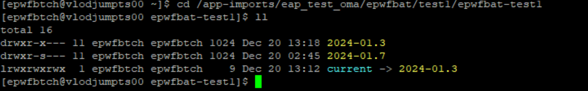

Quick Steps without pictures:
- Login to our stager vlodjumpts00 with your cuid & sudo to the appid
- STOP application using eapdeploy script from stager vlodjumpts00
- Stop the cluster using main menu with option 2 and exit from main menu with option 8
- Go to cd /app-imports/eap_test_oma/epwfbat/test1/epwfbat-test1
- $ rm current
- ln -s 2024-01.7 current
- ls -lrt
- START application using eapdeploy script from stager vlodjumpts00 with eapdeploy main menu
[ad34087@vlodjumpts00 ~]$ sudo su - epwfbtch
Last login: Wed Dec 27 06:04:53 CST 2023 on pts/6
[epwfbtch@vlodjumpts00 ~]$ eapdeploy Enter epwfbat's target environment ( e2e test1 test2 test3 ): test1
